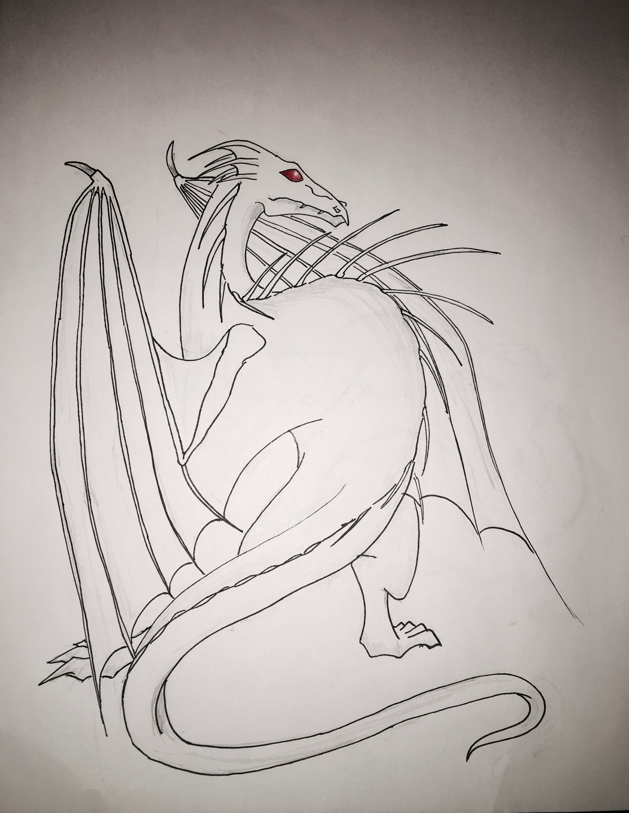

Mederi Abilities
Every Mederi's function is to heal and protect regardless of what beast they may turn into. Though the abilites are keyed to what they morph into. For example if the Mederi's beast was a Phoenix then the witch or wizard would have the ability to heal. Mederi's are also quite smart and resourceful in a tough situation which is why they were quite popular in the middle ages. Mederi's were also very powerful much more than the average witch and wizard.
Each Mederi never has the same beast even if they were born twins. The beast is based on personality and emotion. In human form the Mederi's beast comes through reminding others of their true nature. For example if the beast is a dragon the witch or wizard would have a tail extending from their backbone or if the beast was a phoenix the witch or wizard would have a feathers strewn throughout their hair. When morphing into the beast the Mederi can control how much of the beast is showing or not showing except for the one trait that is always present. As the Mederi grows and hones their skills the more powerful they can be and new abilities can be found.